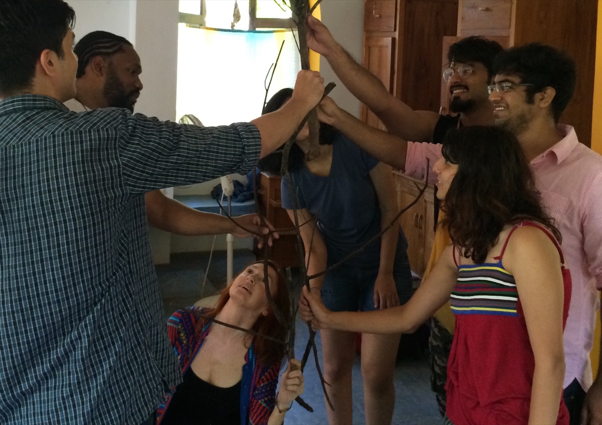

What are you doing about your play deficit? Play-based professional and personal development, using the multiple arts as a springboard for ways into — and back to — play. Browse the featured Playshops, or jump to the full menu by theme. Every Playshop is customized for your group.
Full descriptions ready to book. Each can be a single session, a series, or an intensive — and each can include a short, research-based presentation.
Einstein said play is the highest form of research. Improvisation is a skill used in all the arts — and in all good teaching. This workshop offers multiple entry points, from movement and music improv to storytelling and spoken word, with exercises tied to Multiple Intelligences theory and the Studio Habit of Mind "Stretch and Explore." Drawn from training in theater, Dalcroze Eurhythmics, Orff Schulwerk, jazz, site-specific playwriting and spoken word.
A hands-on, enlivening workshop to help you access your own play resources. You'll be guided through a multiple-arts experience and in mapping your play history. Teachers use it to prepare play environments and extend students' play; parents and couples to recognize play offers and excavate old interests. Available in a teacher-focused or a parent/couple-focused version.
Can you say play deficit? What would it be like to come home to a variety of play spaces — and play, immediately? This is a chance to restore your level of play through a fun, three-step process: recharge old interests with tools to integrate play and work, and map out ways to give your space — no matter what size — the playscapes you need.
Parents are increasingly asked to support children's interests through structured and unstructured play — but where do they find the tools? This workshop offers a hands-on experience of setting up play areas at home. Considerations of space, materials, and how to be a "guide on the side" help you support passion time, intentional playtime and maker spaces.
Guided play helps children focus on what's relevant to a learning goal while still directing much of their own learning. Research suggests playful approaches with adult scaffolding lead to stronger academic outcomes for very young learners than either direct instruction or free play. Examples span kindergarten design-thinking inventions, third-grade music composition, middle-school shadow puppetry, and adult slam poetry.
How playful is your school? This workshop focuses on practices that promote thoughtful, constructivist play, the continuum of play-based pedagogies, and the roots of our own concepts of play. Through hands-on work and group discussion, a mix of participants from across the education field inform one another in rich, interdisciplinary ways.
We recognize a writer's playful use of language — but do we know how to nurture it? To guide students well, we need to identify the developmental, cultural and artistic factors within a play experience. Understanding play signals and using a play rubric helps teachers focus on specific aspects of play, then choose exercises, frameworks and thinking routines that address both play habits and arts/academic content.
Space between words… microbeats between the beats… when we speak, words meet body and breath and truth.
Practice embodied art-making with Spoken Wordshops & Playshops — activate voice and vision to power social change in your school or community. Suitable for young people of all levels, for student groups or individual youth leaders: Intro to Slam Poetry · Empowering Youth Voice · Crowdsourcing Poetry for a Public Cause.
Bring this to your group →
Tell me about your group, school or organization, and we'll build a Playshop around your needs.
sumnernicole@gmail.com